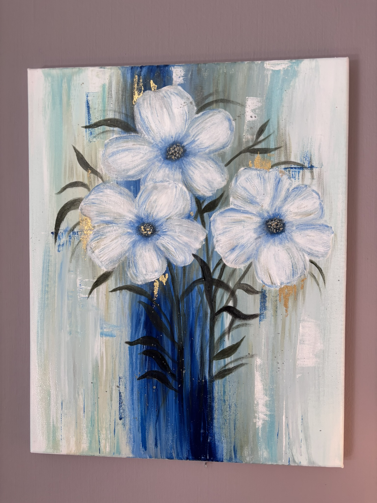
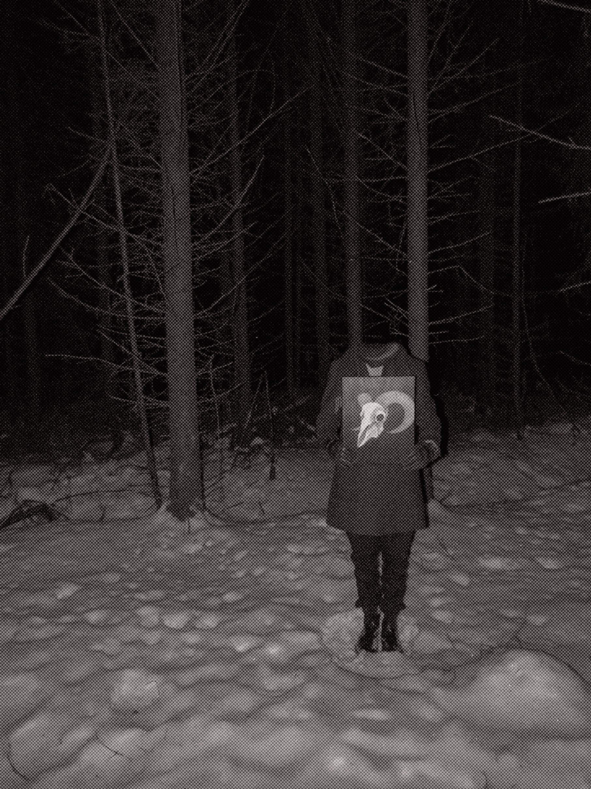
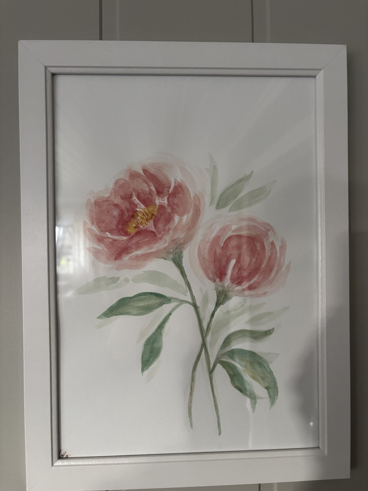

Portfolio

Wild Roses
This is a painting I did for my best friends 27th birthday. I had four different sessions, using acrylics for the background and the flowers. The background is made with a dry brush technique to get more texture and less blending of the different colours. I used a palette knife to apply the paint in a thicker more abstract way. The flowers are painted with white acrylic, using blue as a way to get more detail. I finished it off with gold leaves in the middle of the flowers and in some few other places.

"Omen"
For this project, I wanted to combine painting and photography to create an eerie picture for the 10th anniversary of MORSK. I painted the skull of a goat using acrylics and added fine details with small brushes. It took me several weeks to complete because of the level of detail. Once finished, I got someone to pose with the painting in hand. I hadn't planned out exactly what I wanted to do going forward, but I eventually decided to edit it in photoshop to remove the persons head to make it more haunting. I was lucky to be able to get it into the student magazine, because the theme, gothic, fit perfectly.

Peonies
This is a painting of pink peonies I did for my mothers birthday using watercolors. I did it freely, without any specific plan. I knew I wanted the flowers to "flow" across the page, and I wanted to use a lot of different shades of pink. I used a wet on wet technique to get the petals to blend together, and I added some details with a fine brush once it was dry. I finished it off with some green leaves.